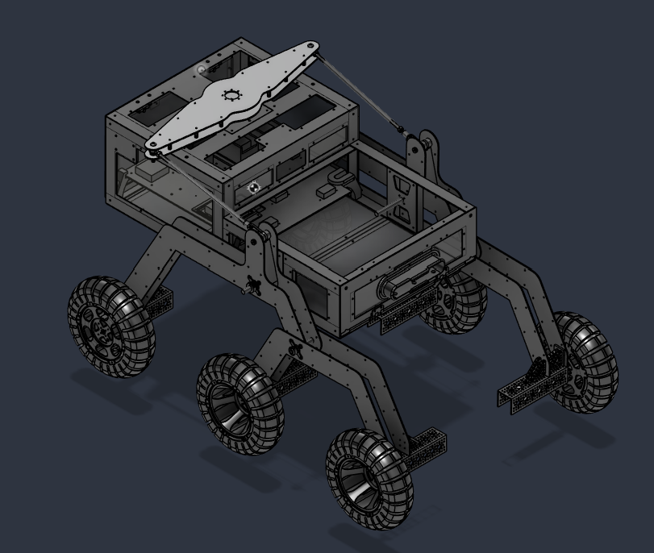
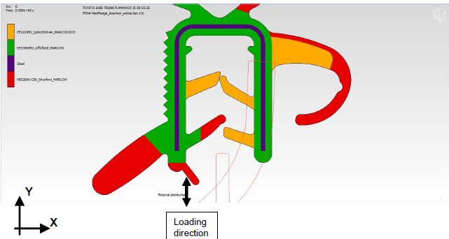
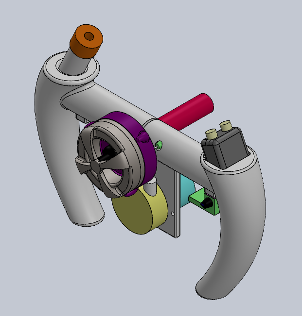

Robotics · Systems integration
Rover Central Housing Unit
A modular aluminum housing integrating rover electronics, computing, power distribution, and wiring.
Explore project →I am a mechanical engineering student at the University of Notre Dame, concentrating in Thermal and Fluid Sciences and Computational Engineering. I am interested in CAE and powertrain systems. This portfolio highlights my work in mechanical design, simulation, prototyping, and systems integration, showing how I approach engineering challenges through analysis, experimentation, and iterative development.

A modular aluminum housing integrating rover electronics, computing, power distribution, and wiring.
Explore project →
Compared insertion and extraction forces across three flange thicknesses to inform a sealing design recommendation.
Explore project →
A functioning two-axis servo-controlled maze developed from concept selection through prototype validation.
Explore project →
A handheld nanofiber manufacturing system integrating high-speed rotation, focused air jets, and solution delivery.
Explore project →